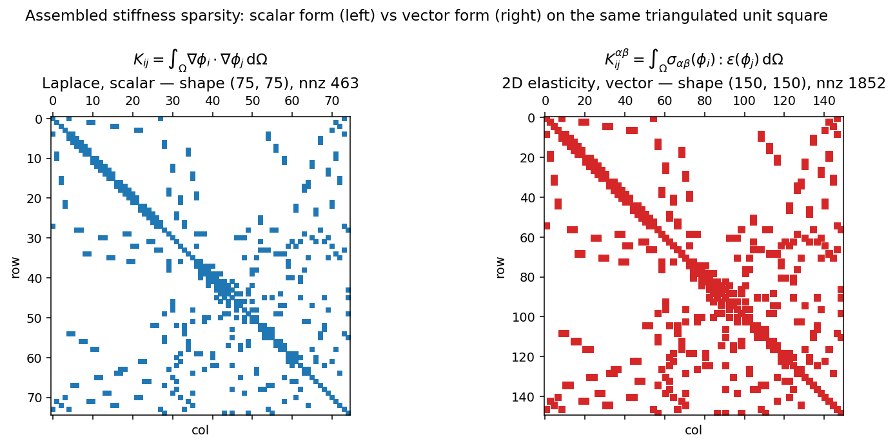

Forms¶
Solving a PDE in TensorMesh starts with two pieces of math:
The bilinear form \(a(u, v)\) becomes a stiffness matrix; the linear form \(l(v)\) becomes a load vector. In TensorMesh you write each integrand as a single Python function and the library handles quadrature, geometry, and the global scatter into a sparse matrix or vector. This is the layer most users interact with — once you have worked through this page you can express almost any FEM weak form in a few lines of Python.
Three base classes cover the common cases. The choice depends on the shape of the object you want to assemble:
Base class |
Math object |
Output |
Typical use |
|---|---|---|---|
bilinear form \(a(u, v)\) |
stiffness, mass, elasticity, advection-diffusion, … |
||
linear form \(l(v)\) |
1-D |
body forces, RHS of \(L^2\) projections, residuals, … |
|
surface integral |
1-D |
Neumann tractions, penalty contact, Robin BCs, surface tension, … |
All three share the same dispatch contract for forward(...), the
same from_mesh(...) / from_assembler(...) constructors, and the
same call-time data plumbing. Learn the contract once and the three
classes feel like a single tool.
The weak-form contract¶
Every assembler subclass overrides forward(...). The base class
inspects the parameter names of your function and supplies the right
tensor for each one, evaluated at every quadrature point of every
element. The bookkeeping — Jacobians, basis values, quadrature weights,
global scatter — happens behind the scenes.
Argument name |
Provided by |
Per-point shape |
Notes |
|---|---|---|---|
|
the basis itself at one quadrature point |
0D |
the inner vmap layer turns this into a scalar in Element / Node |
|
basis gradient in physical coordinates |
1D |
already the physical-space gradient — the \(J^{-T}\) chain rule is applied for you |
|
physical coordinate at the quadrature point |
1D |
auto-supplied from |
any key in |
your nodal tensor interpolated to the quadrature point |
|
e.g. pass |
|
gradient of that field at the quadrature point |
|
automatic — request it by name, do not pass anything extra |
any key in |
per-element constant or per-(element, quadrature) varying tensor |
|
good for history variables in plasticity or pre-computed cell parameters |
any key in |
global scalar |
scalar |
passed verbatim (no vmap broadcasting); use for time steps, penalty weights, … |
Inside forward you write the integrand as a normal tensor
expression. The base class:
broadcasts your function across elements and quadrature points (using
torch.vmap()),multiplies the returned integrand by \(|\det J|\,w\) (the
JxWper quadrature point — see Elements and Quadrature),scatters the result into the right global slot.
The dispatch is by name, not by position — forward(self, u, v)
and forward(self, v, u) are equivalent. The contract only fails if
you use an unrecognised name; you will get a clear ValueError at
call time pointing to the bad argument.
Tip
You never call forward yourself. The library calls it under
vmap for every quadrature point of every element, so even a
trivial print(u) inside forward will fire \(N_e \times
N_q\) times and produce strange-looking traced tensors. For debugging
weak forms, set batch_size=1 and call the assembler on a
one-element mesh, or check the assembled output directly with
K.to_dense().
ElementAssembler — bilinear forms¶
For a(u, v), write a forward(...) that returns the integrand
and call from_mesh(...) + (). Calling the assembler returns a
SparseMatrix.
from tensormesh import Mesh, ElementAssembler
class LaplaceAssembler(ElementAssembler):
r"""a(u, v) = ∫ ∇u · ∇v dΩ"""
def forward(self, gradu, gradv):
return gradu @ gradv
mesh = Mesh.gen_rectangle(chara_length=0.15)
K = LaplaceAssembler.from_mesh(mesh)()
K.shape
# (143, 143)
That’s the whole user story for a scalar bilinear form: one forward
method, three lines of glue, sparse matrix in hand.
The full call signature is
__call__(points=None, func=None, point_data=None,
element_data=None, scalar_data=None, batch_size=-1)
with all arguments optional. The mesh’s own points are used when
points=None; func lets you swap in a different integrand without
defining a new subclass (handy in inverse problems where the bilinear
form is a moving target); the three *_data dicts plumb call-time
inputs into your forward parameters (see
Choosing where call-time parameters live); batch_size is a memory knob covered in
Memory batching with batch_size.
Parameters that vary by mesh: point_data, element_data, scalar_data¶
Most weak forms involve coefficients beyond just \(u, v, \nabla u, \nabla v\). The three call-time dicts let you pass them in without changing the assembler class itself:
import torch
kappa_field = torch.rand(mesh.n_points, dtype=mesh.dtype) # spatially varying coef
class WeightedLaplace(ElementAssembler):
def forward(self, gradu, gradv, kappa):
# `kappa` has shape [] at each quadrature point — interpolated
# from the nodal values via the same basis functions used for u, v.
return kappa * (gradu @ gradv)
K = WeightedLaplace.from_mesh(mesh)(point_data={"kappa": kappa_field})
You can also bake parameters into the subclass via __post_init__,
which runs once after the projector + quadrature are wired up:
class ScaledLaplace(ElementAssembler):
def __post_init__(self, alpha=1.0):
self.alpha = alpha
def forward(self, gradu, gradv):
return self.alpha * (gradu @ gradv)
K = ScaledLaplace.from_mesh(mesh, alpha=2.5)() # alpha is a constructor kw
Either pattern works; pick whichever matches the lifetime of the
parameter (constant across many solves → __post_init__; varies from
call to call → call-time dict).
Sparsity: what the assembled output actually looks like¶
The SparseMatrix is COO-format on top of
torch_sla.SparseTensor; you can @ against it, .solve(b)
against it, or densify it for inspection. The two panels below show the
sparsity pattern of the Laplace stiffness above, next to the
2D-elasticity stiffness on the same mesh:
{kind=link}

Fig. 8 The scalar Laplace stiffness has one entry per (i, j) adjacent
node pair. The 2D-elasticity stiffness has the same connectivity
but each entry is now a \(2 \times 2\) block (one row/col per
displacement component), giving a matrix four times larger with
sixteen times the non-zeros. The library detects the block structure
from the rank of your forward return — see the next section.¶
Vector-valued forms and block-CSR output¶
For vector-valued problems (linear elasticity, Stokes velocity blocks, electromagnetics in vector form) each node carries \(H > 1\) degrees of freedom. The bilinear form integrand for an entry \((i, j)\) is then a \(H \times H\) block, and the assembled matrix has shape \([N_\text{points}\, H,\, N_\text{points}\, H]\).
The library decides scalar vs block by inspecting the rank of what
your forward returns:
forwardreturns a 2-D tensor[B, B]→ scalar, output shape \([N_\text{points}, N_\text{points}]\);forwardreturns a 4-D tensor[B, B, H, H]→ block, output shape \([N_\text{points}\, H, N_\text{points}\, H]\).
For linear elasticity in 2D, the integrand at a quadrature point is
which is exactly the built-in
LinearElasticityElementAssembler:
import tensormesh.functional as F
class Elasticity(ElementAssembler):
def __post_init__(self, E=1.0, nu=0.3):
self.E, self.nu = E, nu
def forward(self, gradu, gradv):
Ba = F.voigt_shape_grad(gradu) # [3, dim*dim] in 2D
Bb = F.voigt_shape_grad(gradv)
C = F.voigt_stiffness(self.E, self.nu, dim=gradu.shape[0])
C = C.to(dtype=gradu.dtype, device=gradu.device)
return Ba.T @ C @ Bb # [dim, dim] block
The whole 2D mesh of 143 nodes produces a \(286 \times 286\) stiffness — see the right panel of the figure above. Everything you read about scalar problems on this page applies unchanged to block problems; only the matrix shape grows.
NodeAssembler — linear forms¶
For \(l(v)\), the same pattern but with a single basis and a vector result:
import math, torch
from tensormesh import NodeAssembler
class L2Source(NodeAssembler):
r"""b_i = ∫ f(x) φ_i dΩ for f(x, y) = sin(π x) sin(π y)."""
def forward(self, x, v):
return torch.sin(math.pi * x[0]) * torch.sin(math.pi * x[1]) * v
mesh = Mesh.gen_rectangle(chara_length=0.05)
b = L2Source.from_mesh(mesh)() # torch.Tensor [n_points]
Call signature:
__call__(points=None, func=None, point_data=None,
scalar_data=None, batch_size=1)
Note that element_data is not accepted (linear forms rarely need
per-element scratch data), and that the default batch_size is 1
rather than the -1 used by ElementAssembler.
To disable batching here pass batch_size=-1 or batch_size=None;
see Memory batching with batch_size for details.
End-to-end check: combining mass + load to project a function into the FE space. The mass matrix \(M\) is SPD, so we can invert it without Dirichlet conditions:

Fig. 9 Left: the assembled load vector \(b_i = \int_\Omega f\, \phi_i\, \mathrm{d}\Omega\), plotted as colored nodal values on the mesh. Right: the \(L^2\) projection \(u_h = M^{-1} b\). The nodal-error magnitude of ~3 × 10-3 matches the expected \(O(h^2)\) discretisation error for P1 elements on this mesh.¶
This is the smallest possible “weak form → assembled output → solved field” loop; the more general workflow with boundary conditions and linear-solver options is the topic of Boundary Conditions and Sparse Solvers.
The simplest possible load — a constant body force \(\int c\, v\,
\mathrm{d}\Omega\) — ships pre-built as
const_node_assembler(); see Built-in assemblers.
FacetAssembler — boundary integrals¶
For surface terms — Neumann tractions, Robin BCs, penalty contact —
FacetAssembler runs the same dispatch over
facet quadrature instead of volume quadrature. The signature contract
is identical to NodeAssembler’s except that the basis arguments
u, v, gradu, gradv keep their basis dimension explicitly (1D [B]
or 2D [B, D]):
from tensormesh import FacetAssembler
class IntegrateOne(FacetAssembler):
r"""b_i = ∫_∂Ω φ_i dS — the per-node boundary-integral weights."""
def forward(self, v):
return v
mesh = Mesh.gen_rectangle(chara_length=0.1)
b = IntegrateOne.from_mesh(mesh)()
b.sum().item() # 4.0 (exact perimeter of [0,1]^2)

Fig. 10 The assembled vector b has support only on the boundary nodes
(interior entries are zero). Summing all entries recovers the
perimeter exactly. FacetAssembler defaults to integrating over
mesh.boundary_mask; pass boundary_mask=... to from_mesh
to restrict to a labelled sub-boundary.¶
Call signature:
__call__(points=None, func=None, point_data=None)
(no element_data, scalar_data, or batch_size for facet
forms.) A worked penalty-contact example using
ContactAssembler (a facet energy
assembler) lives in the Example Gallery.
Choosing where call-time parameters live¶
Three dicts — point_data, element_data, scalar_data — cover
every flavour of “data that varies across the mesh and is not part of
the basis itself”. The decision tree:
You have a value … |
Pass it as |
It enters |
Examples |
|---|---|---|---|
per node, with one trailing field shape |
|
|
material coefficient defined at nodes, displacement field from a previous solve |
per element (one value per cell) |
|
the whole per-element slice (shape |
per-cell Young’s modulus, marker labels, any quantity constant on the element |
per (element, quadrature point) — |
|
the value at the current quadrature point (shape |
plastic strain history in |
global scalar |
|
the scalar value (no vmap broadcasting) |
time step \(\Delta t\), penalty weight \(\kappa\) |
The name of the dict key becomes the parameter name in forward;
the same name must not collide with a built-in (u, v, gradu,
gradv, x, gradx). For point_data keys, you can also
request the gradient by prefixing "grad" to the name — no extra
plumbing is needed.
Caution
Per-(element, quadrature) element_data is auto-detected only by
ElementAssembler.energy (see Energy-based assemblers (element_energy + .energy())), not by the
matrix-assembling ElementAssembler.__call__ path. If you pass a
tensor of shape [n_elem, n_quad, ...] to __call__, the whole
[n_quad, ...] slice is handed to forward for each element —
not the per-quadrature value. For matrix assembly today, keep
element_data strictly per-element.
Feature matrix¶
The four call paths do not all support every plumbing knob. Use this table when you’re unsure whether a feature is available on the assembler you have:
Feature |
|
|
|
|
Notes |
|---|---|---|---|---|---|
|
✓ |
✓ |
✓ |
✓ |
all paths re-cache the |
|
✓ |
✓ |
✓ (forces vmap path) |
✓ |
|
|
✓ |
✓ |
✓ |
✓ |
same nodal-interpolation contract everywhere |
per-element |
✓ |
✓ |
✗ |
✗ |
|
per-(element, quadrature) |
✗ (whole slice) |
✓ (auto-detect by |
✗ |
✗ |
only |
|
✓ |
✓ |
✓ |
✗ |
facet integrals don’t take it |
|
✓ (default |
✓ (default |
✓ (default |
✗ |
see Memory batching with batch_size for the per-class disable sentinels |
|
✗ |
✗ |
✓ (single element type, no |
✗ |
falls back to vmap when conditions aren’t met |
Built-in assemblers¶
The most common forms are pre-written so you don’t have to. All of
them are importable directly from tensormesh:
Class / factory |
Kind |
What it computes |
|---|---|---|
Element |
\(\int \nabla u \cdot \nabla v\, \mathrm{d}\Omega\) — Laplacian / diffusion stiffness |
|
Element |
\(\int u\, v\, \mathrm{d}\Omega\) — mass matrix (transient, \(L^2\) projection) |
|
Element (vector) |
small-strain isotropic elasticity (parameters |
|
Element (energy) |
Neo-Hookean hyperelasticity strain energy density |
|
Element (energy) |
\(J_2\) plasticity with isotropic hardening, return-mapping |
|
Facet (energy) |
base class for penalty / barrier contact and surface terms |
|
Node (factory) |
\(\int c\, v\, \mathrm{d}\Omega\) — uniform body force; returns a class |
|
Node (factory) |
\(\int f(\mathbf{x})\, v\, \mathrm{d}\Omega\) — spatially varying load; returns a class |
Factory style for the node loads:
from tensormesh import const_node_assembler, func_node_assembler
ConstantLoad = const_node_assembler(c=9.81)
b = ConstantLoad.from_mesh(mesh)()
SineSource = func_node_assembler(lambda x: torch.sin(math.pi * x[..., 0]))
b = SineSource.from_mesh(mesh)()
The factories exist because Python class objects can’t be partially
applied; a factory returns a freshly minted subclass that bakes the
constant or function into __post_init__.
Energy-based assemblers (element_energy + .energy())¶
For nonlinear materials the most natural quantity to define is the strain energy density \(\Psi\), not the residual or stiffness:
ElementAssembler supports this pattern via a
parallel method, ElementAssembler.energy, that
integrates an element_energy override and returns a scalar
torch.Tensor. Because the entire pipeline is differentiable,
E.backward() populates u.grad with the internal force vector,
and torch.autograd.functional.hessian() (or a Krylov-friendly
Hessian-vector product) gives the tangent stiffness:
from tensormesh.assemble import NeoHookeanModel
mesh = Mesh.gen_cube(chara_length=0.2)
model = NeoHookeanModel.from_mesh(mesh, E=1e6, nu=0.45)
u = torch.zeros_like(mesh.points, requires_grad=True)
E = model.energy(point_data={"displacement": u})
E.backward()
F_internal = u.grad # internal force vector
Use the matrix-based path (__call__ returning a
SparseMatrix) for linear and bilinear-symmetric problems where
you already have a closed-form integrand; use the energy path for
hyperelasticity, plasticity, and any case where autograd through the
constitutive law is the cleanest expression of the physics.
A custom form: reaction-diffusion¶
Combining stiffness and mass in one assembler:
is just two terms inside forward:
class ReactionDiffusion(ElementAssembler):
def __post_init__(self, kappa=1.0):
self.kappa = kappa
def forward(self, u, v, gradu, gradv):
return gradu @ gradv + self.kappa * (u * v)
K = ReactionDiffusion.from_mesh(mesh, kappa=2.5)()
Argument order doesn’t matter — the dispatch is by name. Mixing in
point_data is just more parameters:
class WeightedReactionDiffusion(ElementAssembler):
def forward(self, gradu, gradv, u, v, kappa, reaction):
return kappa * (gradu @ gradv) + reaction * (u * v)
K = WeightedReactionDiffusion.from_mesh(mesh)(
point_data={"kappa": kappa_field, "reaction": r_field}
)
This generalises straightforwardly: anything you can write as one
algebraic expression in PyTorch can go inside forward, as long as
the return shape obeys the contract in The weak-form contract.
Memory batching with batch_size¶
For very fine meshes or high-order elements, holding all per-element
quadrature tensors in memory at once may not fit. The assembler
__call__ accepts a batch_size argument that splits the
quadrature dimension into chunks and accumulates the contribution:
K = LaplaceAssembler.from_mesh(mesh)(batch_size=4)
This is a memory knob, not problem-level vectorisation; for the latter see Batched Workflows.
How to disable batching:
ElementAssembler— defaultbatch_size=-1processes all quadrature at once.NodeAssembler— defaultbatch_size=1processes one quadrature point at a time; pass-1orNoneto disable batching and process all quadrature points at once.FacetAssembler— does not exposebatch_size; facet integrals are small enough that batching has not been needed.
Any positive integer batch_size produces the same assembled result as
the un-batched call. When batch_size does not evenly divide the
per-element quadrature count, the loop runs one extra (shorter) batch on
the tail; values larger than n_quadrature simply collapse to a single
full batch.
Speeding up NodeAssembler with compile¶
NodeAssembler ships a fast path that bypasses
torch.vmap() and uses direct broadcast operations instead. Enable
it by chaining compile():
class Ones(NodeAssembler):
def forward(self, v):
return v
# Default — uses vmap dispatch (predictable, slowest startup):
asm = Ones.from_mesh(mesh)
b = asm()
# Compile mode — bypass vmap, use direct broadcast (5–30× faster in tight loops):
asm = Ones.from_mesh(mesh).compile()
b = asm()
# Disable for debugging (so breakpoints inside `forward` fire as expected):
asm.reset_compile()
The mode argument additionally controls whether torch.compile is
layered on top: "disable" (default) does the vmap bypass only,
"default" / "reduce-overhead" / "max-autotune" enable
torch.compile with the given level of optimisation. For most users
the default compile() (no torch.compile) is already a large
speedup with no warm-up cost. flat_mode()
is a synonym for compile(mode="disable").
The fast path only fires when all three of the following hold; if any of them fails the call falls back transparently to the vmap path:
.compile()has been called on the assembler (is_compiledreturnsTrue).The mesh has exactly one element type (
len(self.element_types) == 1). Mixed-element meshes use the vmap path even with compile enabled.No
func=override is passed at call time. Callingasm(func=alt_form)always goes through the vmap path so that you can swap integrands without recompiling.
Note
The fast path replaces vmap with explicit broadcast operations, which
imposes a stricter contract on forward: it must work when
v / gradv arrive with leading [n_quadrature, ...] /
[n_element, n_quadrature, ...] dimensions rather than as
scalars. Closed-form forms that compose those tensors via element-wise
ops (return v, return gradv @ vec) work as-is; forms that
index or reshape per-quadrature inputs may need a few broadcast
tweaks, or are simpler to leave on the default vmap path. The fast
path also does not auto-supply x; if you need coordinates,
pass them in under a custom name (point_data={"xy": mesh.points}
then forward(self, xy, v)).
Writing your own assembler¶
The library’s design assumes most users will, at some point, write a custom assembler. Here is the practical recipe.
1. Pick the base class by what you’re assembling — a matrix
(ElementAssembler), a load vector
(NodeAssembler), or a boundary term
(FacetAssembler). If the integrand is most
naturally expressed as a scalar energy density, use the .energy()
path on ElementAssembler instead of writing the
residual + stiffness by hand — autograd will do that for you.
2. Implement ``forward(self, …)``. Use only the parameter names
listed in The weak-form contract (u, v, gradu, gradv,
x, gradx), plus any keys you intend to pass through
point_data, element_data, scalar_data. Return the per-point
integrand at the right rank: scalar problems return [B, B]
(Element) or [B] (Node / Facet); block problems return [B, B, H,
H] or [B, H].
3. Stash parameters in ``__post_init__``, not __init__. The
base class’s __init__ wires up the projector, transformation, and
edges; __post_init__ runs immediately after with the constructor
kwargs and is where self.E = E belongs.
4. Build the assembler via from_mesh()
and call it. Constructor kwargs are forwarded to __post_init__.
The instance is callable (and is an torch.nn.Module, so
.to(device) / .double() Just Work).
A self-contained template covering both styles:
from tensormesh import Mesh, ElementAssembler
class MyForm(ElementAssembler):
r"""a(u, v) = ∫ α ∇u · ∇v + β u v dΩ.
α is a per-element coefficient, β a global scalar.
"""
def __post_init__(self, beta=1.0):
self.beta = beta
def forward(self, gradu, gradv, u, v, alpha):
return alpha * (gradu @ gradv) + self.beta * (u * v)
mesh = Mesh.gen_rectangle(chara_length=0.1)
alpha = torch.rand(mesh.cells["triangle"].shape[0], dtype=mesh.dtype) # per-cell coef
K = MyForm.from_mesh(mesh, beta=2.5)(
element_data={"alpha": alpha},
)
Debugging tips
If the dispatch fails with
ValueError: <name> is not supported, the parameter name doesn’t match any built-in or any key you passed in the data dicts. Check for typos likegrad_uvsgraduordisplacmentvsdisplacement.If you hit a shape error inside
forward, setbatch_size=1and call the assembler on a one-element mesh; the tensors handed in are then small enough toprintand reason about. Remember thatforwardruns under vmap — what you see has the leading element / quadrature dimensions stripped.For sanity-checking the assembled output, run a known integral: a
MassElementAssemblershould give1^T M 1 == areafor the unit function; aFacetAssemblerreturningvshould sum to the boundary length; aLaplaceElementAssemblerapplied to a linear fieldu = xshould yield zero residual. Thetests/assemble/test_facet.pyfile has a battery of these closed-form checks.
For exhaustive examples covering hyperelasticity, plasticity, contact, and fluid problems, see the Example Gallery.
What’s next¶
Boundary Conditions — apply Dirichlet BCs to the matrix and vector you just assembled.
Sparse Solvers — solve
K x = bwith the right backend.Differentiability — backprop a loss through assembly and solve, for inverse problems and topology optimisation.
Batched Workflows — go from “one mesh per call” to “thousands of meshes per call” for ML dataset generation.
Example Gallery — worked examples for elasticity, hyperelasticity, plasticity, contact, and fluids.